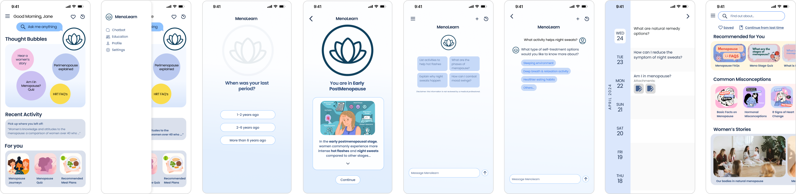
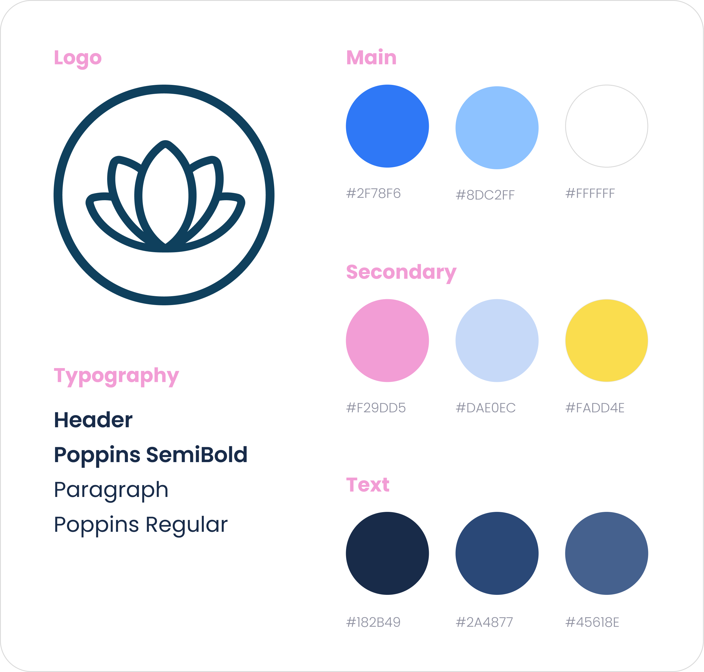
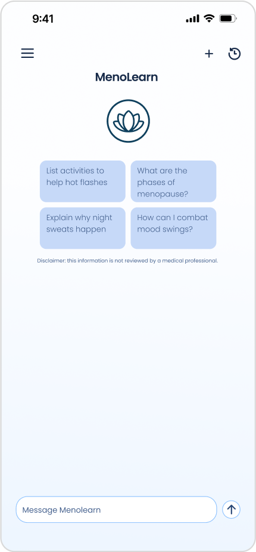
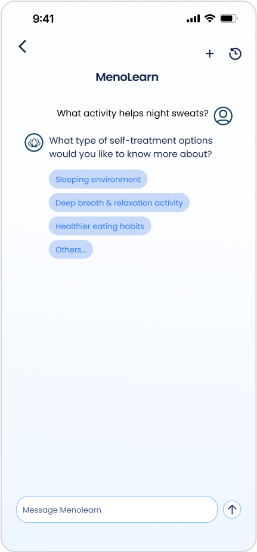
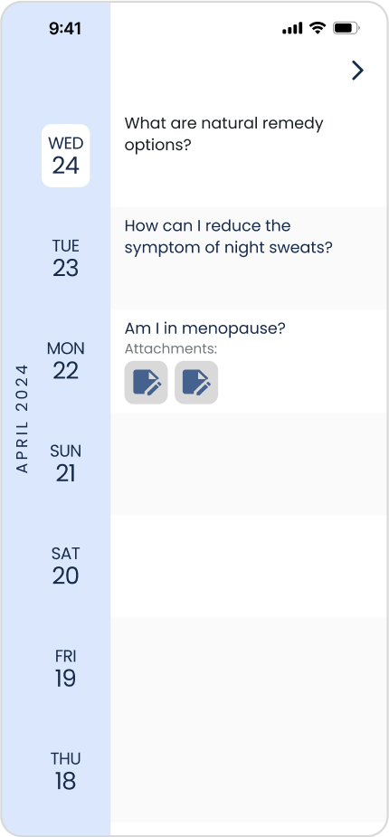

Overview
For a project for UC San Diego's Global TIES program, my team and I partnered with
the non-profit My MenoPlan to create an empathetic AI chatbot and resource. Our
goal was to make a mobile website called Menolearn that could provide information
and support through the chatbot and other resources, such as research papers and other women's stories.
The Problem
While My MenoPlan had several resources on their website, such as information on
medication and videos sharing different experiences, these were not showcased in
an easily accessible way. While information was present, it was not easy to find
answers, especially for someone who might be confused about their journey in menopause.
Our team asked ourselves:
How might we provide specific answers and resources for someone who may not know what they are looking for?
How might we present information about a stigmatized topic so that users may feel supported and understood?
The Solution
Our solution was to redesign the website to reorganize their information architecture
and create a welcoming and empathetic environment, as well as integrating a chatbot
feature. This would be designed by my team, the Menolearn Interaction Design Team,
and would be passed on to the Menolearn WebDev team to bring the designs to reality.
Research
Interviews and Qualitative Analysis
Four groups were interviewed: Doctors, Nurses, Medical Students and General Public.
During these interviews, we asked individuals to share their education on menopause
and also their personal experiences with menopause or their experiences supporting
friends or family through it.
We then created transcripts of these interviews to conduct qualitative analysis to
determine what women felt like they lacked during their menopause or what they
would find valuable. Some common themes included:
- Wanting discussion or conversation, rather than simply answers
- Feeling as if their experiences were not of importance to others
- Confusion due to a lack of information
- Wanting alternatives such as natural remedies
From these themes, we created user personas to better understand who Menolearn would be for.
These themes drove the design, further emphasizing how important it was to
create a conversational space where women would feel heard and validated while
receiving correct information on menopause.
Ideation
It was important for my team to start with designing the chatbot, as this was the
main feature of Menolearn. We collaborated with the Machine Learning Team to
determine what would be achievable in terms of features and answers that the chatbot
could provide. We started with sketches and low-fidelity mockups so we could start
to envision the design, but clearly define what features we wanted to be included.
The design was critiques and iterated on until it reached our first high fidelity prototype.
Low Fidelity Prototype
First High Fidelity Prototype
After evaluating this prototype, we felt that while we were satisfied with the
concept and functionality, it did not capture the empathetic essence that we were
aiming to create. It was not as visually appealing or welcoming as we wanted it to be.
From here, the interaction design team split into two sub teams, each creating their
own new design for the same key features and pages. My team's design was ultimately
chosen for the final design, the whole team we then regrouped together to put finishing
touches on.
The Design
Final Screens

Style Guide

We started with revamping the color scheme to be more cheerful, so that
users could feel more comfortable with their experiences and feel less
like they needed to be professional or strictly medical like they would
at a doctor's office.
Home Page
Users can access main features of the website, including the chatbot, articles,
and community resources from the original My MenoPlan site. Various actions a
user can take are shown through the “Thought Bubbles”.
Resources can be curated for the user based on their questions to the chatbot
to provide more pertinent information.
Chatbot
It was important for us to create a chatbot with different answering options,
such as multiple choice or selection. This was done to reduce confusion (e.g.
a user does not know how to answer because they are uninformed on the topic) and
reduce the effort it takes for them to use the chat bot (e.g. if they have multiple
symptoms that they are experiencing, or if they are interested in multiple remedies).

Home Screen:
Frequently asked questions or related topics are generated for the user.

Messages:
Users are able to select answer options from the chatbot.

History:
Previous chats can be accessed, along with documents or resources that were provided.
Quiz
Original resources from the My MenoPlan site were retained, such as the “Am I in
Menopause” quiz. This can be retaken at any time on the site, but is also
presented as part of the onboarding process so the user's menopausal stage can guide
the content presented.
Next Steps
In June, my team and I presented Menolearn to our stakeholders and community members.
The WebDev team was able to implement the chatbot design, and the Machine Learning
team had trained the chatbot on menopause information and research, so the chatbot
was able to respond to specific prompts accurately.
I hope to continue working on the team, rejoining as part of the WebDev team. While
I have experience with HTML/CSS/JS, I am furthering my knowledge through taking additional
courses in front-end development.
After implementing more of the Menolearn so that other features including the chatbot are
usable, usability testing would be conducted to test ensure our goals of providing easily
accessible information in a supportive manner.